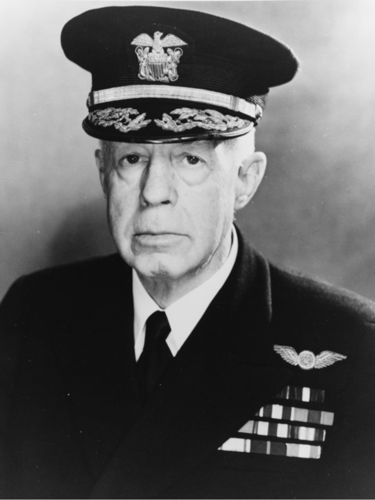
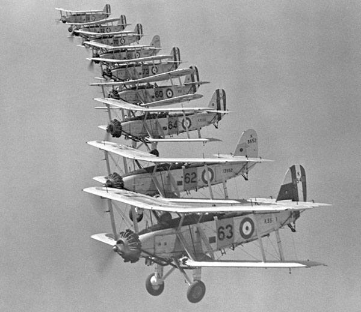
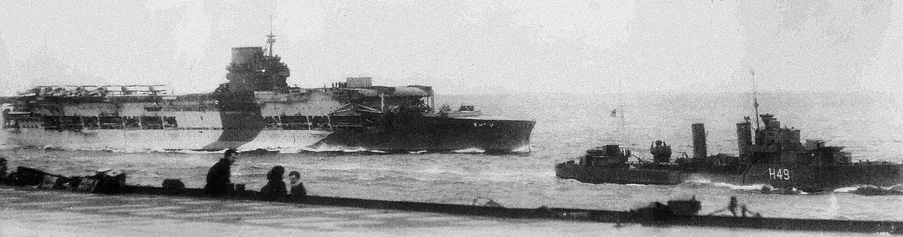
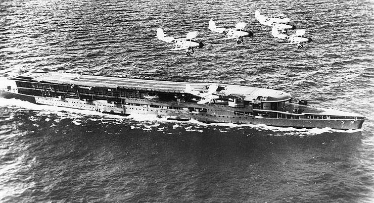
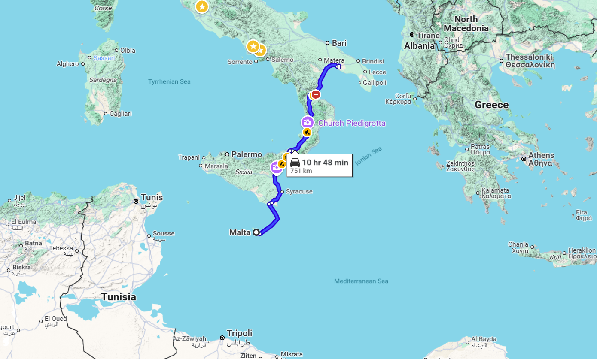

WW2 중 항모에서의 야간 작전 (6) - 글로리어스의 고난
게시: 2025-03-27T08:05:54+09:00
흔히 1941년 12월 일본해군의 진주만 습격은 1940년 11월 영국해군의 타란토(Taranto) 습격에 영감을 받아 이루어진 것이라고 말함. 그리고 실제로도 그랬음. 다만 영국해군이 타란토 습격의 본질인 항구에 정박한 적함을 뇌격기로 기습 공격한다는 개념 자체를 발명한 것은 아니었음. 그런 개념을 처음 공개한 것은 바로 미해군. 아니러니컬하게도 바로 진주만에 대한 워게임에서 나왔음. 아직 해전의 주역은 든든한 장갑과 대구경 주포를 갖춘 전함의 몫이고 항공모함의 역할은 어디까지나 전함의 작전을 위한 정찰이라는 생각이 주도적이던 1932년 2월, 하와이 방어를 위한 워게임이 벌어짐. 이때 공격군을 맡은 Harry E. Yarnell 제독은 사람들의 고정 관념을 깨버림. 야널 제독의 공격 함대에는 전함과 순양함, 구축함과 더불어 'scout carrier' 개념으로 USS Saratoga와 USS Lexington이 딸려 있었음. 방어군에서는 야널 제독이 전함을 앞세워 공격해올 것이라고 생각했으나, 야널 제독은 전함은 저 멀리 뒤에 남겨두고 두 척의 항모에서 152대의 함재기를 날림. 하필 또 1941년 진주만 때처럼 일요일 새벽이었음. 공격군의 주력 전함들이 아직 저 멀리 있으니 안심하고 있던 방어군은 완전히 허를 찔림. 야널 제독의 함재기들은 먼저 진주만 인근의 미육군 항공기지를 박살내고, 이어서 전함들이 줄지어 정박한 부두를 폭격. 물론 실제로 폭격이 이루어지지도 않았고 방어군의 대공포도 실제 발포되지는 않았으므로 당시 기술 수준에서 어느 정도의 피해가 있었을지는 아무도 모르는 일이지만, 아무튼 워게임의 심판들은 야널 제독의 공격이 완전한 성공이라고 판정. 이렇게 항공모함에서 발진한 함재기들에 의한 항구 공격은 1938년 벌어진 샌프란시스코 방어를 위한 워게임에서 다시 한 번 완벽한 성공을 거둔 것으로 판정됨.

(1944년의 야널 제독. 1941년에는 66세로서 이미 퇴역한 뒤였으나 다시 복귀하여 행정직을 맡았음.) 그런데 이런 작전을 실전에서 고려한 것은 역시 영국해군. 1935년, 이탈리아 파시스트 정권의 무솔리니가 아비시니아(Abyssinia, 즉 에티오피아)를 침공하자 그에 대한 응징으로 영국 지중해 함대 사령관이던 William Wordsworth Fisher 제독은 항모를 이용하여 이탈리아 남단의 주요 군항인 타란토의 이탈리아 함대를 공격할 계획을 세움. 구체적인 계획은 지중해 함대 소속 항모전단 지휘관이던 Alexander Ramsay 제독에게 일임. 램지 제독은 역시 구체적인 공격 계획은 HMS Glorious의 항공대원들에게 일임. 원래 이렇게 높으신 양반들은 일 편하게 함. 높으신 양반들이 '이렇게 해보면 어떨까?' 라고 말도 안되는 생각을 이야기하면, 아랫것들이 그걸 어떻게든 말이 되는 계획으로 만들기 위해 고생을 하는 것임.

(1935년 당시 영국해군의 최신예 함재뇌격기는 Blackburn Baffin. 보통 복엽뇌격기인 Fairey Swordfish가 개발된지 오래된 낡은 항공기라고 생각하지만 소드피쉬만 해도 1936년에 최초 도입된 최신예기였음. 그런데 배핀도 역시 최신예기로서 1934년 도입됨. 그러나 배핀은 소드피쉬처럼 성공적이지는 못해서, 불과 97대만 제작됨.)

(HMS Glorious(2만2천톤, 32노트)의 1940년 모습. 이 사진이 찍히고 나서 얼마 안되어 글로리어스는 독일전함 샤른호스트와 그나이제나우에게 그만... 오른쪽의 작은 군함은 구축함 HMS Diana) 항모 글로리어스의 조종사들과 작전계가 열심히 궁리를 해보니 어려운 문제가 한두 가지가 아니었음. 일단 타란토 항구의 수심이 너무 낮았음. 더 구체적으로, 주요 공격 대상이던 전함들이 정박하는 구역의 수심은 평균 15m가 채 안 되었음. 문제는 보통 뇌격기에서 투하한 어뢰는 일단 21m 이상의 깊이로 잠수했다가 목표를 향해 돌진하면서 수심 유지 장치에 의해 미리 정해둔 심도(가령 10m)로 조금씩 떠오르게 되어 있었다는 것. 게다가 항구에 정박한 전함들은 대개 어뢰 방어망(torpedo net)을 쳐놓기 때문에 어뢰 공격이 통하지 않을 것 같았음. 무엇보다 보통 군항은 수십~수백문의 대공포로 보호되는 곳이었고, 공격 대상인 전함들에도 대공포가 촘촘히 꽂혀 있을 터인데 그렇게 대공포화가 밀집한 곳으로 뇌격기를 들이민다는 것은 좋은 생각 같지가 않았음. 무거운 어뢰를 달고 나는 뇌격기는 폭격기 중에서도 매우 느린 편이었기 때문에 더욱 그러했음.

(1936경 사진인데, HMS Furious 위를 날아가는 블랙번 배핀 편대. 배핀의 최대 속력은 219 km/h. 미드웨이 해전에서의 미해군 주력 뇌격기였으나 형편없는 속력으로 큰 피해만 입었던 Douglas TBD Devastator조차 332 km/h를 냈음.) 글로리어스의 항공대에게는 무척이나 다행스럽게도, 당시 국제연맹(League of Nations)은 파시스트 국가들의 발호에 대해 너무나 무기력했기 때문에 결국 이탈리아에 대한 응징 공격은 실현되지 않았음. 그리고 글로리어스가 연구하던 타란토 항구에 대한 각종 조사와 작전안, 고려 사항 등에 대한 논의 문서는 기밀로 분류되어 밀봉되었음. 그러나 글로리어스가 안도하기엔 일렀음. 불과 3년 뒤, 나찌 독일이 오스트리아와 합병하면서 곧 전쟁이 터진다는 위기감이 팽배해졌음. 피셔 제독을 대신하여 영국 지중해 함대를 맡게 된 Dudley Pound 제독도 곧 전쟁이 발발할 것이라고 확신했음. 영국 지중해 함대의 근거지는 크게 3곳이었는데, 지중해 서쪽 끝인 지브랄타, 지중해 동쪽 끝인 이집트의 알렉산드리아, 그리고 지중해 한가운데인 말타섬. 문제는 말타섬. 이탈리아 바로 남쪽에 있었기 때문에 이탈리아 공군기들의 폭격에 고스란히 노출되어 있었던 것. 파운드 제독은 아예 말타섬의 영국 함대 함정들을 알렉산드리아로 재배치할 정도로 이탈리아와의 교전을 확신하고 있었음.

(말타는 시칠리아섬 바로 아래이고, 타란토에서의 거리는 직선거리로 약 700km에 불과) 전쟁에서 최고의 전술은 언제나 선빵. 파운드 제독도 이탈리아 남부의 주요 군항인 타란토에 대한 선제 공격을 진지하게 연구하기 시작했고, 역시나 그는 아랫것들에게 '그거 좀 연구해봐'라고 지시를 내림. 결국 이 지시는 예전처럼 윗사람들로부터 아랫사람들에게 차례로 밀려 내려왔고, 결국 또 글로리어스의 항공대에게 내려오게 됨. 글로리어스의 당시 함장인 Lumley St George Lyster 대령은 불과 3년 전 그런 작전안에 대한 연구가 있었다는 것을 알고 있었으므로 일단 그 3년 전 연구부터 다시 공부하기 시작. 덕분에 작전안은 생각보다 빨리 만들어졌음. 이렇게 만들어진 작전안의 큰 얼개는 다음과 같음. 1) 밤에 공격한다. 느린 뇌격기들이 성공적으로 공격할 방법은 어둠 속에 숨는 것 뿐이다. 2) 어둠 속에서 공격할 경우 아군기는 어떻게 적함을 찾는가에 대한 해답은 이미 개발되어 있다. 공격 편대 중 일부가 조명탄을 투하하면 된다. 3) 공격 편대 중 일부는 폭탄으로 지상 목표물을 공격함으로써 적의 대공포 방어를 분산시킨다. 이 공격안에는 아직 적의 어뢰 방어망은 어떻게 회피할 것인지 또 타란토 항구 바닥이 낮아서 어뢰 공격이 어려운 점에 대해서는 어떻게 할 것인지 등은 포함되지 않았음. 그냥 어떻게든 되겠지 정도의 생각. 그리고 이 작전에서 약 10%의 함재기가 격추될 것으로 평가. 파운드 제독이 이 공격안을 받아보고 내린 평가는 '이 따위 걸 작전안이라고... 다시 해와!'...정도까지는 아니었으나 흡족해하지는 않았음. 파운드 제독이 보기에 아무리 봐도 10%의 상실률은 지나치게 낮게 잡은 것 같았고, 또 자칫하다간 그 뇌격기들을 날려보낸 항모들까지 적의 역습을 받아 격침되기 딱 좋았음. 그는 일단 그 계획안을 비상 계획으로 접어두기로 하고 해군본부에 보고조차 하지 않았음. (다음 주에 계속)